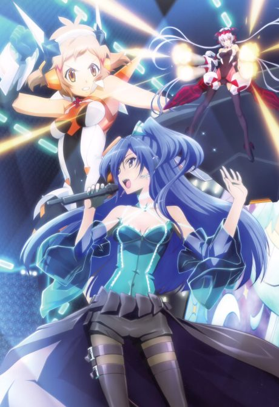
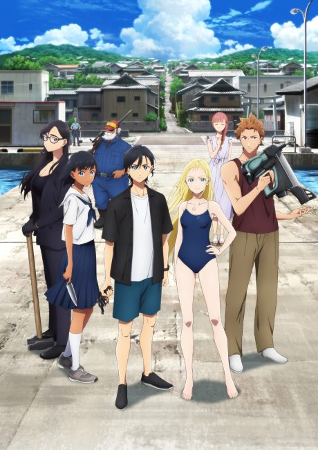
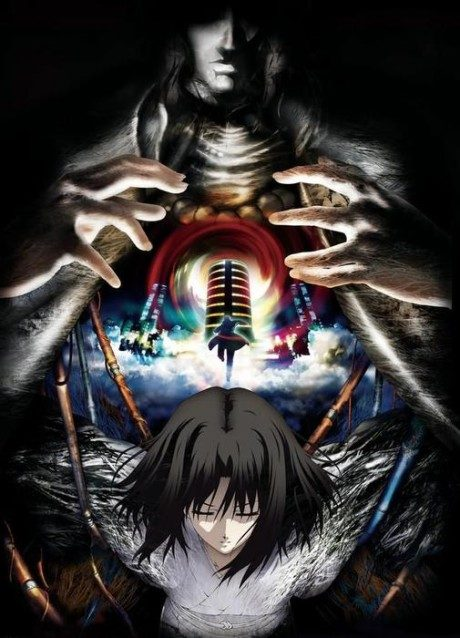

Symphogear
戦姫絶唱シンフォギア
Hibiki is saved by her favourite singer and gains the power to fight alien monsters by singing.
An original anime, so there's no book to continue with.
6.9AniList score
—Animeter, no votes yet
65episodes, 5 seasons
Rate it or report where you stopped
Is there a manga to continue?
StatusOriginal
An anime original, so there is no manga to pick up from.
Sources: AniList, MyAnimeList
More like Symphogear
 Original7.2
Original7.2
 Original8.3
Original8.3
 Original7.1
Original7.1
 Original7.6
Original7.6
 Original7.7
Original7.7
 Original7.4
Original7.4
 Original8.1
Original8.1
 Original8.3
Original8.3

Done8.3 Original7.5
Original7.5
 Manga Ch. 228.7
Manga Ch. 228.7

Film8.4